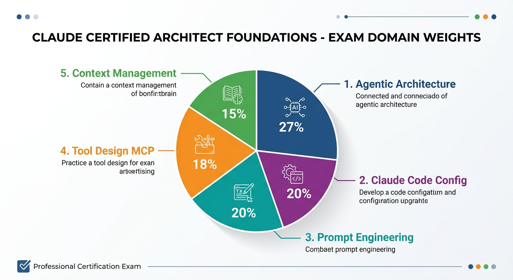
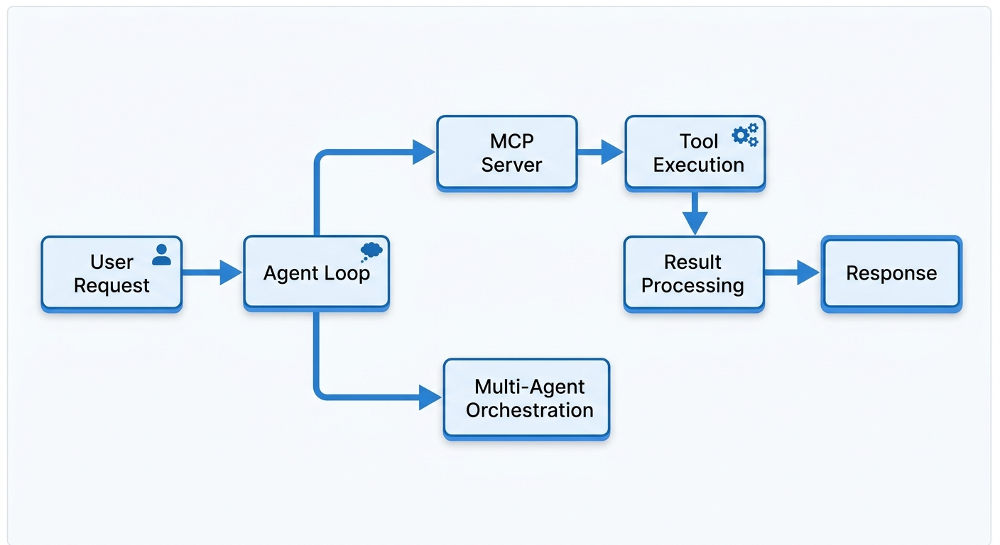

PC初心者からでも合格できる！ステップバイステップ学習ロードマップ
2026年3月 最新版試験料: $99（約15,000円）/ 1回の受験ごと
ただし Claude Partner Network（無料で参加可能） のメンバー企業の従業員は、先着5,000名まで無料で受験できます。
| 項目 | 詳細 |
|---|---|
| 試験名 | Claude Certified Architect - Foundations |
| 発行元 | Anthropic |
| 開始日 | 2026年3月12日 |
| 出題形式 | 60問・シナリオベース・4択（正解1つ） |
| 合格ライン | 720点 / 1,000点満点（72%以上） |
| 試験方式 | オンラインプロクター（監視付き） |
| シナリオ | 全6シナリオ中、ランダムに4つが出題される |
| 受験資格 | Partner Network参加（組織なら無料で参加可能） |
| 申込サイト | anthropic.skilljar.com |
Agent SDKとMCPツールを使ったサポートシステムの設計・実装
CLAUDE.md設定、プランモード、カスタムコマンドの活用
複数エージェントのオーケストレーションとコンテキスト管理
組み込みツールとMCPサーバーの統合設計
非対話的モードと構造化出力によるCI/CD統合
JSONスキーマ設計と検証ループの実装

D1: エージェンティック・アーキテクチャ & オーケストレーション
D2: ツール設計 & MCP統合
D3: Claude Code 設定 & ワークフロー
D4: プロンプトエンジニアリング & 構造化出力
D5: コンテキスト管理 & 信頼性
試験範囲に出てくる専門用語を、日常の例え話で解説します。
AI開発経験者: 2〜4週間
プログラミング経験者: 4〜8週間
PC初心者: 12〜16週間
以下はPC初心者向けの16週間プランです。経験者は該当するステップから開始してください。
目標: コマンドライン（ターミナル）を怖がらずに使えるようになる
cd, ls, mkdir無料教材: Progate, ドットインストール, YouTube
目標: Pythonで簡単なプログラムを書き、APIを呼べるようになる
requests ライブラリでHTTPリクエスト目標: Claude APIを使ってプログラムからClaudeを呼び出せるようになる
messages.create()
# 最小限のClaude API呼び出し例
import anthropic
client = anthropic.Anthropic() # APIキーは環境変数から自動読込
message = client.messages.create(
model="claude-sonnet-4-6",
max_tokens=1024,
messages=[
{"role": "user", "content": "Pythonとは何ですか？"}
]
)
print(message.content[0].text)
目標: Claude Codeを使いこなし、効果的なプロンプトを書ける
tool_use による JSON出力の強制目標: エージェントシステムを設計でき、MCPを使えるようになる
目標: 合格ラインの720点/1000点を超える
最も配点が高い！ここを落とすと合格できない

普通のチャットAI = 質問に答えるだけの受付係
エージェント = 自分で電話して、書類を調べて、報告書を作ってくれる秘書
エージェントの動き方（エージェンティック・ループ）:
Anthropicが提供するエージェント開発キット。エージェントの作成・実行・管理ができる。
複数のエージェントを連携させる設計。「調査エージェント」「執筆エージェント」など役割分担。
エージェントの動作の前後に独自の処理を挟む仕組み。「ツール実行前にログを残す」など。
大きな仕事を小さなステップに分割するパターン。複雑な問題を解きやすくする。
import anthropic
# エージェントのツールを定義
tools = [
{
"name": "search_database",
"description": "商品データベースを検索する",
"input_schema": {
"type": "object",
"properties": {
"query": {
"type": "string",
"description": "検索キーワード"
}
},
"required": ["query"]
}
}
]
# エージェンティック・ループ
client = anthropic.Anthropic()
messages = [{"role": "user", "content": "赤いスニーカーを探して"}]
while True:
response = client.messages.create(
model="claude-sonnet-4-6",
max_tokens=1024,
tools=tools,
messages=messages
)
# ツール使用が必要なら実行して結果を返す
if response.stop_reason == "tool_use":
# ツールを実行して結果をmessagesに追加
# ... ループ継続
pass
else:
# 最終回答 → ループ終了
print(response.content[0].text)
break
スマートフォンを考えてみてください:
MCPがあることで、Claude はいろんな外部サービスに統一的な方法で接続できます。
claude_desktop_config.json でサーバーを接続このドメインは全60問中 約12問が出題されます。CLAUDE.md、カスタムコマンド、プランモード、CI/CD統合の4つを深く理解する必要があります。
Claude Code = あなたのPCの中で動くAIプログラマー助手
ターミナルで claude と打つだけで起動。ファイルの読み書き、コード修正、テスト実行、Git操作まで全部やってくれます。
普通のChatGPTやClaude.aiとの違い:
| 機能 | Webチャット | Claude Code |
|---|---|---|
| ファイルの読み書き | できない | できる |
| コマンド実行 | できない | できる |
| Git操作 | できない | できる |
| プロジェクト全体の理解 | 限定的 | 全ファイル参照可能 |
| 自動でコード修正 | できない | できる |
CLAUDE.md = Claudeへの「仕事のルールブック」
プロジェクトに置いておくと、Claude Codeがセッション開始時に毎回自動で読み込むファイルです。
CLAUDE.mdは3つのレベルで設定でき、それぞれ影響範囲が異なります。
📁 パソコン全体（グローバル設定） ├── ~/.claude/CLAUDE.md ← 全プロジェクト共通のルール │ 📁 プロジェクト（プロジェクト設定） ├── my-project/CLAUDE.md ← このプロジェクト専用のルール ├── my-project/.claude/rules/*.md ← ルールファイル（複数ファイルに分割可能） │ 📁 サブフォルダ（フォルダ設定） ├── my-project/src/CLAUDE.md ← src/ で作業するときだけ有効 ├── my-project/tests/CLAUDE.md ← tests/ で作業するときだけ有効
paths: フロントマターで特定のファイルにだけ適用することも可能claudeMdExcludes で不要なCLAUDE.mdを無視できる（モノレポで重要）# プロジェクトルール（CLAUDE.md の例） ## 技術スタック - 言語: TypeScript (strict mode) - フレームワーク: Next.js 15 (App Router) - スタイリング: Tailwind CSS - テスト: Vitest + React Testing Library ## コーディング規約 - 変数名はキャメルケース（例: userName） - コンポーネントはPascalCase（例: UserProfile） - 関数は必ず型注釈をつける - console.logは本番コードに残さない ## ビルドコマンド - 開発: npm run dev - テスト: npm test - ビルド: npm run build ## 禁止事項 - any型の使用禁止 - .envファイルをコミットしない - 外部APIキーをハードコードしない
このように書いておくと、Claude Codeは毎回このルールに従ってコードを書いてくれます。
公式ドキュメントでは、.claude/rules/ディレクトリにYAMLフロントマター付きのMDファイルを置いて、特定のファイルにだけルールを適用できます。
# .claude/rules/api-rules.md --- paths: - "src/api/**/*.ts" ← src/api/ 内のTypeScriptファイルにだけ適用 --- APIエンドポイントでは必ず以下を守ること: - 入力バリデーションにZodを使用 - エラーレスポンスは統一フォーマットで返す - レートリミットを設定する
よく使う作業を「/コマンド名」で一発実行できる仕組み
料理のレシピカードのようなもの。「/カレー」と言えば、材料の準備から盛り付けまでの手順が自動で実行される。
.claude/commands/フォルダにマークダウンファイルを置くだけ！
📁 プロジェクト/ ├── .claude/ │ └── commands/ │ ├── review.md ← /review で実行される │ ├── deploy.md ← /deploy で実行される │ ├── ci/ │ │ ├── build.md ← /build で実行される │ │ └── test.md ← /test で実行される │ └── git/ │ ├── commit.md ← /commit で実行される │ └── pr.md ← /pr で実行される
ファイルの先頭にYAMLフロントマター（設定情報）を書けます。
# .claude/commands/review.md --- description: "コードレビューを実行する" ← コマンドの説明 allowed-tools: "Read, Bash(git:*)" ← 使えるツールを制限 model: "sonnet" ← 使用するモデルを指定 argument-hint: "[ファイルパス]" ← 引数のヒント --- 以下の手順でコードレビューを行ってください: 1. 指定されたファイルを読み込む 2. バグ、セキュリティの問題、パフォーマンスの問題をチェック 3. 改善提案をリストアップ 4. 重要度順に並べて報告 レビュー基準: - SOLID原則に従っているか - エラーハンドリングが適切か - テストが書かれているか
| フィールド | 意味 | 例 |
|---|---|---|
description | コマンドの説明文 | "PRを作成する" |
allowed-tools | 使用可能なツールの制限 | "Read, Bash(git:*)" |
model | 使用モデルの指定 | "sonnet" / "opus" |
argument-hint | 引数のヒント表示 | "[PR番号] [優先度]" |
disable-model-invocation | AI呼び出しなしで実行 | true |
通常のコマンドは /コマンド名 で手動実行しますが、スキル（SKILL.md）は条件に合致すると自動的に発動します。
# .claude/commands/explain-code/SKILL.md --- name: explain-code description: コードの仕組みを図解付きで説明する。 「これどう動くの？」「仕組みを教えて」と聞かれたら自動発動。 --- コードを説明するときは必ず以下を含めること: 1. 日常の例えで全体像を説明 2. ASCII図で構造を描く 3. ステップバイステップでコードを解説 4. よくある間違いを指摘
「いきなり作業せず、まず計画書を見せて」モード
家のリフォームで例えると: いきなり壁を壊し始めるのではなく、まず設計図を見せてもらって「OK」を出してから作業開始する。
# 方法1: キーボードショートカット Shift+Tab ← プランモードのON/OFFを切り替え # 方法2: セッション開始時に指定 claude --plan ← 最初からプランモードで起動 # 方法3: 会話の途中で切り替え 「まず計画を立ててから実行してください」と指示する
通常モード:
あなた「認証機能を追加して」→ Claude がすぐにコードを書き始める
プランモード:
あなた「認証機能を追加して」→ Claude が計画書を作成
## 実装計画
### 1. 認証ミドルウェアの作成
- src/middleware/auth.ts を新規作成
- JWTトークンの検証ロジックを実装
### 2. ログインAPIの作成
- src/api/auth/login.ts を新規作成
- bcryptでパスワード照合
### 3. 保護ルートの設定
- 既存のAPIルートにミドルウェアを適用
### 4. テストの追加
- tests/auth.test.ts を作成
この計画でよろしいですか？
あなた「OK、進めて」→ Claude が計画に沿って実行開始
Claudeの動作の前後に「自動チェック」を挟む仕組み
工場のベルトコンベアで例えると: 製品（コード）が次の工程に進む前に、自動で品質検査を入れるイメージ。
| フック名 | 発動タイミング | 使用例 |
|---|---|---|
PreToolUse |
ツール使用の前 | Bashコマンド実行前に危険なコマンドをブロック |
PostToolUse |
ツール使用の後 | ファイル編集後に自動フォーマット・Lint実行 |
// .claude/settings.json に記述
{
"hooks": {
// ファイル編集後に自動でコードスタイルをチェック
"PostToolUse": [
{
"matcher": "Write|Edit", // Write か Edit ツール使用後に発動
"hooks": [
{
"type": "command",
"command": ".claude/hooks/check-style.sh" // スタイルチェック実行
}
]
}
],
// Bashコマンド実行後にログを記録
"PostToolUse": [
{
"matcher": "Bash", // Bashツール使用後に発動
"hooks": [
{
"type": "command",
"command": "jq -r '.tool_input.command' >> ~/.claude/command-log.txt"
}
]
}
]
}
}
"Bash", "Write|Edit", "*" など）"command"（シェルコマンド実行）が基本Claude を「自動化パイプライン」の一部として使う方法
普段は対話（チャット）で使いますが、CI/CDでは人間なしで自動実行する必要があります。そのための「ヘッドレス（画面なし）モード」です。
# -p フラグ = 「プロンプトを渡して即実行、結果を出力して終了」 # テキスト出力（人間が読む用） claude -p "このコードのバグを見つけて" --output-format text # JSON出力（プログラムが処理する用） claude -p "このコードを分析して" --output-format json # ストリームJSON（リアルタイム処理用） claude -p "ログを解析して" --output-format stream-json
Linuxのパイプ（|）を使って、他のツールと連携できます。
# ファイルの中身をClaudeに渡して分析結果をファイルに保存 cat data.txt | claude -p "このデータを要約して" --output-format text > summary.txt # コードを渡してバグ分析結果をJSONで取得 cat code.py | claude -p "バグを分析して" --output-format json > analysis.json # ログファイルからエラーを抽出 cat error.log | claude -p "エラーの原因を分析して" --output-format json | jq '.result'
# .github/workflows/claude-review.yml
name: Claude Code Review
on: [pull_request]
jobs:
review:
runs-on: ubuntu-latest
steps:
- uses: actions/checkout@v4
- name: Claude でコードレビュー
uses: anthropics/claude-code-action@v1
with:
claude_args: "--max-turns 5 --model claude-sonnet-4-6"
# ↑ CLIの引数をそのまま渡せる
| オプション | 意味 | 使用例 |
|---|---|---|
-p "プロンプト" | 非対話モードで実行 | claude -p "テストを実行して" |
--output-format | 出力形式の指定 | text / json / stream-json |
--max-turns | 最大ターン数の制限 | --max-turns 5 |
--model | 使用モデルの指定 | --model claude-sonnet-4-6 |
--allowed-tools | 使用可能ツールの制限 | --allowed-tools "Read,Grep" |
--mcp-config | MCP設定ファイルの指定 | --mcp-config ./mcp.json |
--max-turns を設定しない → 無限ループで課金が爆発するtext にして後続処理でパースしようとする → json を使うべき--allowed-tools で最小限のツールだけ許可する（セキュリティ原則）.claude/rules/ でパス指定ルールを設定できる理由を説明できるPreToolUse と PostToolUse の違いと使い分けがわかるclaude -p の非対話モードと --output-format の3つの形式を知っている--max-turns を設定すべき理由を説明できる悪い例: 「ユーザー情報を整理して」
良い例: 「以下のユーザー情報を、name, email, age のJSONオブジェクトとして出力してください。ageが不明な場合はnullにしてください。」
この「良い指示の出し方」を体系的に学ぶのがプロンプトエンジニアリングです。
「良い」「悪い」の判断基準をプロンプトに含める。AIに「何が正解か」を教える。
「こういう入力が来たら、こう返してね」という例を2-3個見せる手法。
# Few-shotプロンプティングの例
prompt = """
以下の形式でレビューの感情を分類してください。
入力: "この商品は最高です！"
出力: {"sentiment": "positive", "confidence": 0.95}
入力: "まあまあかな"
出力: {"sentiment": "neutral", "confidence": 0.6}
入力: "二度と買わない"
出力: {"sentiment": "negative", "confidence": 0.9}
入力: "値段の割には良い品質"
出力:
"""
AIに「この形で答えて」と"強制"する仕組み
普通にAIに聞くと自由な文章で返ってきますが、プログラムで処理するには決まった形式のデータが必要です。構造化出力はそれを保証します。
構造化出力なし: 「鈴木さんがメールでエンタープライズプランに興味があると言ってました」 → プログラムで処理しにくい
構造化出力あり:
{
"name": "鈴木太郎",
"email": "suzuki@example.com",
"plan_interest": "enterprise",
"demo_requested": true
}
→ プログラムがすぐにデータベースに保存できる！
Anthropic公式ドキュメントでは、構造化出力を実現する2つの方法が提供されています。
| 方法 | 仕組み | 保証レベル | 用途 |
|---|---|---|---|
| JSON出力 (output_config) |
レスポンス全体をJSONスキーマに従わせる | スキーマ準拠を保証 | データ抽出、レポート生成、分類 |
| Strict Tool Use (strict: true) |
ツール呼び出しの引数をスキーマに従わせる | 型安全を保証 | エージェントのツール呼び出し、関数実行 |
AIの回答全体を指定したJSONスキーマの形に強制します。
# Python（Pydanticモデルを使う方法 - 公式推奨）
from pydantic import BaseModel
from anthropic import Anthropic
# ステップ1: 「注文用紙」の型を定義する
class ContactInfo(BaseModel):
name: str # 名前（文字列）
email: str # メール（文字列）
plan_interest: str # 興味のあるプラン（文字列）
demo_requested: bool # デモ希望かどうか（true/false）
client = Anthropic()
# ステップ2: output_format にPydanticモデルを渡す
response = client.messages.parse(
model="claude-sonnet-4-6",
max_tokens=1024,
messages=[{
"role": "user",
"content": "抽出して: 鈴木太郎 (suzuki@example.com) "
"エンタープライズプランに興味あり、火曜14時にデモ希望"
}],
output_format=ContactInfo # ← ここで型を指定！
)
# ステップ3: 自動でバリデーション済みのデータが得られる
print(response.parsed_output)
# → ContactInfo(name='鈴木太郎', email='suzuki@example.com',
# plan_interest='enterprise', demo_requested=True)
| 言語 | メソッド | スキーマ定義方法 |
|---|---|---|
| Python | client.messages.parse() | Pydantic BaseModel |
| TypeScript | client.messages.parse() | Zod スキーマ + zodOutputFormat() |
| cURL / その他 | output_config パラメータ | 生の JSON Schema |
ツール呼び出しの引数がスキーマに100%準拠することを保証します。
# エージェントのツールに strict: True を設定
response = client.messages.create(
model="claude-sonnet-4-6",
max_tokens=1024,
messages=[{"role": "user", "content": "東京の天気を教えて"}],
tools=[{
"name": "get_weather",
"description": "指定した都市の現在の天気を取得する",
"strict": True, # ← これが重要！スキーマ準拠を保証
"input_schema": {
"type": "object",
"properties": {
"location": {
"type": "string",
"description": "都市名（例: 東京）"
},
"unit": {
"type": "string",
"enum": ["celsius", "fahrenheit"] # この2つしか選べない
}
},
"required": ["location"], # location は必須
"additionalProperties": False # 余計なフィールドを禁止
}
}]
)
# strict: True の保証:
# ✅ JSONが壊れることはない
# ✅ required フィールドが必ず存在する
# ✅ 型が正しい（stringにnumberが入らない）
# ✅ enum以外の値が入らない
# ✅ 再試行ループが不要になる！
使えるキーワード:
type, properties, required, additionalPropertiesenum（選択肢を限定）, const（固定値）items（配列の要素定義）, description使えないキーワード（要注意！）:
minimum, maximum（数値の最小/最大） → descriptionに記述で代用minLength, maxLength（文字列長） → descriptionに記述で代用pattern（正規表現） → 非対応SDKが自動でこれらの制約を description に変換してくれます。
Claude Code の CLI でも --json-schema フラグで構造化出力が使えます。
# CLIで構造化出力を取得
claude -p "auth.py の関数名を抽出して" \
--output-format json \
--json-schema '{
"type": "object",
"properties": {
"functions": {
"type": "array",
"items": {"type": "string"}
}
},
"required": ["functions"]
}'
# 結果例:
# {"functions": ["login", "verify_token", "logout", "refresh_session"]}
additionalProperties: false を必ず設定enum で制限するminimum/maximum をスキーマに入れる（無視される）strict: true なのに再試行ループを書く（無駄）AIの回答を「検品」して、不良品なら「やり直し」させる品質管理システム
工場の品質管理で例えると: 製品を検査して、不良品があれば製造ラインに戻してやり直させる。それと全く同じです。
公式ドキュメントでは、structured outputs（strict: true）を使えば検証ループは不要になると明記されています。
検証ループが必要なのは:
┌──────────────────────────────────────────┐
│ 1. AIにリクエストを送る │ ← 「この注文を処理して」
│ (プロンプト + スキーマ指定) │
└─────────────┬────────────────────────────┘
▼
┌──────────────────────────────────────────┐
│ 2. AIがレスポンスを返す │ ← 料理が出てくる
│ (JSON形式のデータ) │
└─────────────┬────────────────────────────┘
▼
┌──────────────────────────────────────────┐
│ 3. 検証（バリデーション） │ ← 品質検査
│ ├── JSONとして正しいか？ │
│ ├── 必須フィールドがあるか？ │
│ ├── データ型は正しいか？ │
│ └── ビジネスルールを満たすか？ │
└─────┬───────────────┬────────────────────┘
│ ✅ 合格 │ ❌ 不合格
▼ ▼
┌──────────┐ ┌───────────────────────────┐
│ 結果を返す │ │ 4. エラー内容をフィードバック │
│ （完了） │ │ して再度リクエスト │
└──────────┘ │ （最大N回まで） │
└──────────┬────────────────┘
│ 再試行 (→ ステップ2に戻る)
▼
┌───────────────────────────┐
│ 5. 最大回数に達したら │
│ エラーとして処理 │
└───────────────────────────┘
import anthropic
import json
client = anthropic.Anthropic()
def extract_with_validation(text: str, max_retries: int = 3) -> dict:
"""検証ループ付きのデータ抽出"""
# 期待するスキーマの定義
required_fields = ["name", "email", "age"]
messages = [{
"role": "user",
"content": f"""以下のテキストから情報を抽出して、
JSONで返してください。
必須フィールド: name(文字列), email(文字列), age(数値)
テキスト: {text}"""
}]
for attempt in range(max_retries):
# ---- ステップ1: AIにリクエスト ----
response = client.messages.create(
model="claude-sonnet-4-6",
max_tokens=1024,
messages=messages
)
raw_output = response.content[0].text
# ---- ステップ2: JSON パース検証 ----
try:
data = json.loads(raw_output)
except json.JSONDecodeError as e:
# JSONが壊れている → フィードバックして再試行
messages.append({"role": "assistant", "content": raw_output})
messages.append({
"role": "user",
"content": f"JSONパースエラーです: {e}\n"
f"正しいJSONで返してください。"
})
continue # → ループの先頭に戻る
# ---- ステップ3: フィールド存在チェック ----
missing = [f for f in required_fields if f not in data]
if missing:
messages.append({"role": "assistant", "content": raw_output})
messages.append({
"role": "user",
"content": f"以下のフィールドが不足: {missing}\n"
f"すべて含めて再出力してください。"
})
continue # → ループの先頭に戻る
# ---- ステップ4: 型チェック ----
if not isinstance(data.get("age"), (int, float)):
messages.append({"role": "assistant", "content": raw_output})
messages.append({
"role": "user",
"content": "age は数値で返してください。"
})
continue # → ループの先頭に戻る
# ---- 全検証クリア！ ----
return data
# 最大回数に達した場合
raise ValueError(f"{max_retries}回の試行で有効なデータを取得できませんでした")
# 使用例
result = extract_with_validation("鈴木太郎、35歳、suzuki@example.com")
print(result)
# → {"name": "鈴木太郎", "email": "suzuki@example.com", "age": 35}
上記のコードは strict: true や output_format を使えば大幅に簡略化できます。
from pydantic import BaseModel
from anthropic import Anthropic
# スキーマを定義するだけ
class PersonInfo(BaseModel):
name: str
email: str
age: int
client = Anthropic()
# これだけでOK！検証ループ不要！
response = client.messages.parse(
model="claude-sonnet-4-6",
max_tokens=1024,
messages=[{
"role": "user",
"content": "抽出: 鈴木太郎、35歳、suzuki@example.com"
}],
output_format=PersonInfo # ← スキーマ準拠が保証される
)
print(response.parsed_output)
# → PersonInfo(name='鈴木太郎', email='suzuki@example.com', age=35)
# JSONパースエラー → 起きない
# フィールド不足 → 起きない
# 型エラー → 起きない
minimum / pattern は非対応これらの場合は、structured outputs で形式を保証しつつ、ビジネスロジックだけ検証ループで追加チェックするのがベストプラクティスです。
出力の形を事前に見せる。AIは見本に合わせて回答する。JSON / XML / カスタム形式に対応。
Few-shotで「こう来たらこう返す」の例を見せる。抽象的な指示より例のほうがAIの理解度が高い。
ナレッジベースから情報を取得して、それを元に回答させる。AIの「知識」ではなく「事実」に基づく回答になる。
複雑なタスクを小さなサブタスクに分割。各ステップでAIの注意力が集中し、一貫性が向上する。
additionalProperties: false を設定すべき理由を説明できるAIとの会話が長くなると、最初の方の内容を忘れてしまいます。
これはコンテキストウィンドウ（AIの短期記憶）に限りがあるため。
この問題にどう対処するかが「コンテキスト管理」です。
長い会話を「要約」して圧縮する手法。ただし要約の過程で重要な情報が抜け落ちるリスクがある。
重要な情報を会話のどこに置くかで、AIの精度が変わる。最初と最後に重要情報を置くのが効果的。
AIが「自分には判断できない」と認識したとき、人間に判断を委ねる仕組み。
例: 返金額が$100を超える場合 → マネージャーに転送
エージェントAがエラーを出したとき、エージェントBにどう伝えるか。エラーが連鎖して全体が止まらないようにする設計。
AIの「確信度」を数値化して、確信度が低い回答は人間に確認する仕組み。「90%確信あり」vs「30%確信あり」で対応を変える。
「暗記」ではなく「設計判断力」が問われる試験です
すべての問題はシナリオベース。「この状況で最適な設計は何か？」を判断する力が必要です。
Anthropicの公式ドキュメント（docs.anthropic.com）が最も重要な教材です。特にAgent SDK、MCP、Claude Codeのセクション。
読むだけでは不十分。実際にエージェントを作り、MCPサーバーを構築し、CLAUDE.mdを設定する経験が必要。
「何をすべきか」だけでなく「何をしてはいけないか」も出題される。18個のアンチパターンを把握する。
「レイテンシ vs コスト」「安全性 vs スピード」など、正解が1つではない設計判断の練習をする。
| リソース | 内容 | 料金 |
|---|---|---|
| Anthropic 公式ドキュメント | API、Agent SDK、MCP、Claude Code の公式リファレンス | 無料 |
| Claude Certifications サイト | 試験ガイド、模擬問題、アンチパターン集 | 無料 |
| Anthropic Cookbook (GitHub) | 実践的なコード例とパターン集 | 無料 |
| Claude Code 実践 | 実際にClaude Codeを使ってプロジェクトを管理する | API使用料のみ |